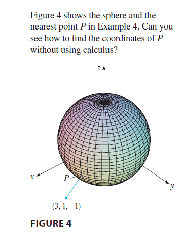

EXAMPLE 4 Find the points on the sphere \(x^2 + y^2 + z^2 = 4\) that are closest to and farthest from the point \((3, 1, -1)\).

SOLUTION The distance from a point \((x, y, z)\) to the point \((3, 1, -1)\) is \[ d = \sqrt{(x - 3)^2 + (y - 1)^2 + (z + 1)^2} \] but the algebra is simpler if we instead maximize and minimize the square of the distance: \[ d^2 = f(x, y, z) = (x - 3)^2 + (y - 1)^2 + (z + 1)^2 \] The constraint is that the point \((x, y, z)\) lies on the sphere, that is, \[ g(x, y, z) = x^2 + y^2 + z^2 = 4 \] According to the method of Lagrange multipliers, we solve \(\nabla f = \lambda \nabla g, g = 4\). This gives \[ 2(x - 3) = 2x\lambda \] \[ 2(y - 1) = 2y\lambda \] \[ 2(z + 1) = 2z\lambda \] \[ x^2 + y^2 + z^2 = 4 \] The simplest way to solve these equations is to solve for \(x, y,\) and \(z\) in terms of \(\lambda\) from (12), (13), and (14), and then substitute these values into (15). From (12) we have \[ x - 3 = x\lambda \implies x(1 - \lambda) = 3 \implies x = \frac{3}{1 - \lambda} \] [Note that \(1 - \lambda \neq 0\) because \(\lambda = 1\) is impossible from (12).] Similarly, (13) and (14) give \[ y = \frac{1}{1 - \lambda} \quad z = \frac{-1}{1 - \lambda} \] Therefore, from (15), we have \[ \frac{3^2}{(1 - \lambda)^2} + \frac{1^2}{(1 - \lambda)^2} + \frac{(-1)^2}{(1 - \lambda)^2} = 4 \] which gives \((1 - \lambda)^2 = 11/4\), \(1 - \lambda = \pm \sqrt{11}/2\), so \[ \lambda = 1 \mp \frac{\sqrt{11}}{2} \] These values of \(\lambda\) then give the corresponding points \((x, y, z)\): \[ \left(\frac{6}{\sqrt{11}}, \frac{2}{\sqrt{11}}, -\frac{2}{\sqrt{11}}\right) \quad \text{and} \quad \left(-\frac{6}{\sqrt{11}}, -\frac{2}{\sqrt{11}}, \frac{2}{\sqrt{11}}\right) \] It’s easy to see that \(f\) has a smaller value at the first of these points, so the closest point is \((6/\sqrt{11}, 2/\sqrt{11}, -2/\sqrt{11})\) and the farthest is \((-6/\sqrt{11}, -2/\sqrt{11}, 2/\sqrt{11})\).